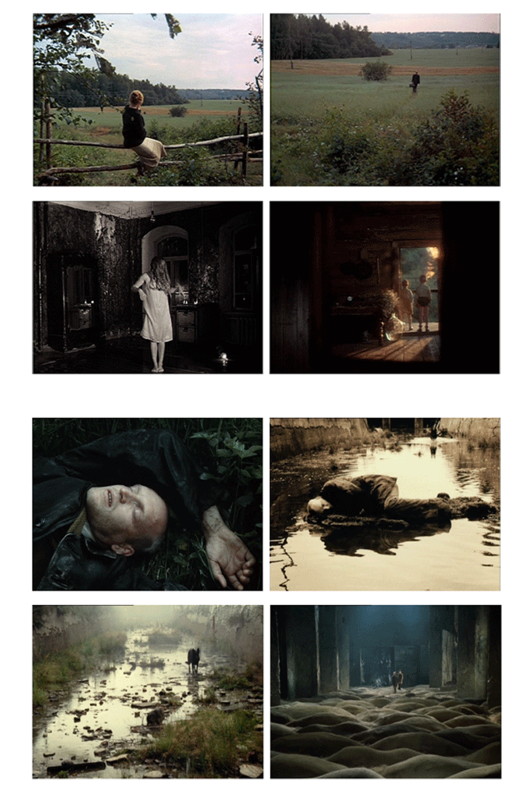
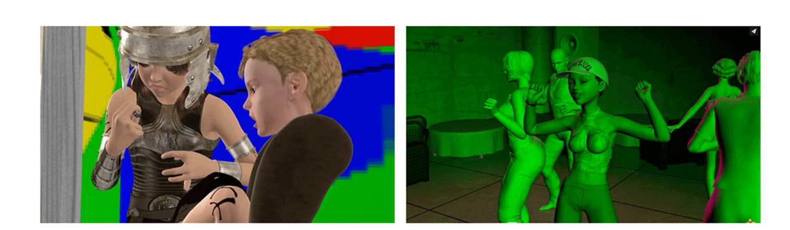

(1) Jung, Carl Gustav, et al. Memories, Dreams, Reflections. 7th impr., London, Collins Clear-Type Press, 1973.
INTRODUCTION
“The images of the unconscious place a great responsibility upon a man. Failure to understand them, or a shirking of ethical responsibility, deprives him of his wholeness and imposes a painful fragmentariness on his life” 1
For me, dreaming has always been a deeply intimate story that I would rather reflect upon solely within myself. I often found myself in a process of dream analysis, mostly because dreams unfolded the narratives I would find unpleasant, disturbing or, perhaps, too complex for that moment in time. Those narratives would not always be heavy or ‘dark’, there would often be pleasant and light ones, too. Whenever a dream was pleasant, I would try to prolong the emotional impact of that dream, gleefully ‘soaking in the after-taste of it’, trying to take its mood into my awaken state.
What makes me so eager to research the topic of dreams is it’s mystic nature, the subjectivity of interpretations and the ‘universality’ of the topic – in the end, we all dream, and we all would have something surprising to share about our personal dreaming experiences. As well as being interested in the topic from a historical research perspective, I have also been once triggered by a conversation I had with my close friend. This conversation made me question why we share similar re-occurring dream stories and why so differently those similar narratives shape meaning. More than that, I was very fascinated by the fact that we dream of the same images of the surroundings and environments of the past. Both of us come from the same city in Russia – Cheboksary – but I suppose that’s not the reason to take for granted as of why we constantly find ourselves thrown back in time. Another aspect I found that caught my attention and informed my interest, is that the narration of our dreams would always be in dual time layers – we both would see the present-day ourselves, but clearly understand that the narration is happening in the past.
A dream itself is something I inseparably associate with the ‘after-taste feeling’. Once the dream is over and I am awake, I am still able to experience or to ‘taste’ the dream and its emotional post-state it left me with. It is similar to the feeling one usually has after having watched a movie – one might be elevated, inspired or be totally on the other side of the emotional spectrum – devastated, concerned, wanting to unsees it, perhaps? It is my goal with this thesis to guide you, the reader – and a dreamer! – towards having that dreamy ‘after-taste’ emotion – be it because you would start paying more attention to your dreams, or be it because you would appreciate the stories and histories that I will present to you in this writing.
The Fields Of Persimmons
I was seeing vast fields of persimmons, next to me was a person, we were walking through the fields towards an unknown point. I so badly wanted to taste one persimmon – it is, indeed, one of my favorite fruits. It was surreal: the fruits were of unrealistic size, close to the size of watermelons, cut in halves and scattered all over the fields, they looked so juicy and so attractive; the person next to me seemed to be my mother, but we were walking in silence, almost like strangers. I felt so surely that I was with my mother, I felt that it was her. In the end, I couldn’t steal a fruit, my mother said: “They will count one less, you can’t take it…”.
This dream left me with a very frustrated after-taste feeling – lonely, lost and unsatisfied. I felt covered in this dream – while the dream was past for me, my awaken self wasn't quite there yet. Imagine having a take away coffee, but having to run to the stain station – you are having your nice beverage right in your hands and you can taste it, yet you also need to rush to the train and you can’t fully slow down to be in a moment of enjoying the coffee part. With this analogy I want to explain what the after-taste of a dream is like – it’s like having a take away coffee.
We share dreams to relate, to establish our connections as human beings living within a vast emotional spectrum. We also share dreams to show that we trust, and want to be trusted in turn. Dream sharing is a practice that has a long history and, interestingly, dream sharing played a big role in forming ‘collectivity’ and human wholeness.
(2) Spellberg, Powell and David Leo Rice, hosts. “Talk and Demonstration / Dream-Parliament.” Event as part of The Cabinet organization, 16 March 2017, link.
(3) For Heraclitus, see The First Philosophers: The Presocratics and the Sophists, trans. Robin Waterfield (Oxford: Oxford University Press, 2000), p. 38. For the commentary, see Georg Wilhelm Friedrich Hegel, “Heraclitus,” Lectures on the History of Philosophy, vol. 1, trans. E. S. Haldane (London: Kegan Paul, Trench, Trübner and Co., 1892), p. 297.
(4), (5) Matthew, Spellberg. “On Dream Sharing and it’s Purpose; The Social Contract of Sensuous Imagining” The Cabinet, issue 67 / Dreams, Spring 2019-Winter 2020, link.
CHAPTER 1
PROTOCOLS FOR DREAM SHARING“In a lot of societies, in fact, there have been very elaborate techniques or protocols developed precisely to share dreams between people. To share them in a very careful and deliberate manner. So, for example, in Japan, before the 18th century, there was a set of poetic inventions, in which aristocrats would share their dreams and turn them into poems. In ancient Athens, in the Pacific North West, and many other cultures of various different kinds, people have been sent out into the woods, or to remote temples to dream and report back what they have seen in that dream.” 2
To share a dream is a very intimate act, which can be sensitive for both the teller – to share it, and for the listener – to hear it. With psychotherapy becoming a regular practice for many of us, people ‘book’ their opportunities to be listened to and collectively reflect. Referring to dreaming experience is often essential when analyzing your mental state, because we all, some less and some more, get touched by our dreams. However, to identify what is too personal to share is a very fine line. Dream sharing is also a sign of trust and it is the responsibility of a teller to present the right depth of the details he or she has dreamt about.
“(...) the dream is a knowledge of something of which I alone know.” 3
Today dream sharing as an act manifests itself with primarily individualistic nature. In most of the cases dreams are told as monologues – be it sharing to a friend, family member or in a psychotherapist’s room. While dreams are, of course, reflected upon with help of an external person, the meaning of dreams is still utilized within the particular person’s life.
The role of dreaming back in history proves to be very different – dream sharing ossessed collective nature and was used not solely in relation to the individual who shared it. Dreams were seen as portals to the other worlds, were broken down into symbols that were later de-coded to create a universal language of dream meanings. In short, dreams were collectively harnessed goods, as explained by Matthew Spellberg in an article titled On Dream Sharing and it’s Purpose: “In dream sharing, something from the depths of sleep is harnessed for use in the public world, in the community of the awoken.” 4
I first discovered the word ‘protocols’ in relation to ‘dreams’ in the same article by Matthew Spellberg, where he explains: “And yet, despite this vision of dreams as paradigmatically distant, many of the world’s cultures—especially outside of the modern West—have developed elaborate protocols by which dreams can be shared.” 5 In my point of view, the relation between the words ‘protocols’ and ‘dreams’ is especially deep – compared to, for example, if we say ‘techniques’ or ‘approaches’. The term ‘protocols’ appears surprisingly more inclusive and broadens up the range of possible meanings.
I would like to use the word ‘protocols’ to refer to the various stories that evolved in the history of dream sharing. Those protocols include, amongst many, objects, space and places, books and publications, rituals and guidelines developed by individuals or cultures.
(6), (7) Richard, Sommer. Natalie Fizer. “Glossary of Dream Architecture (Full Version); Genus for a New Circadia” The Cabinet, issue 67 / Dreams, Spring 2019-Winter 2020, link.
(*) Oneiric means ‘like a dream, or relating to dreams’, definition taken from Cambridge Dictionary (online), link.
1.1
Where I Lay My Head, I Dream“The pillow, by elevating the head off the ground, remains the most essential prosthetic medium for inducing states of sleep and dreaming. The first pillows were carved from stone.” 6
In ancient Egypt, headrests were used for mummies to serve as amulets, which were believed to be saviors from the evil forces. In fact, stones have long been related to sleeping and dreaming due to their therapeutic properties: “(...) for instance, sleeping on jade was believed to cure insomnia and depression, enhance memory, and curtail hair loss. In more recent history, echoes of the lapidary treatise are found in alternative and New Age cultural practices, where the application of stones and minerals to the body is thought to have various oneiric functions. For example, within some New Age healing theories, it is believed that amethyst aids in transitioning from day to night, barite induces dreams and assists in their recollection, hematite promotes lucid dreaming, and rubies can safeguard one from nightmares.” 7 [fig.01]

In this way, minerals and stones have been holding an oneiric* function, while in ancient times people also carved stone pillows – headrests [fig.02] – especially to celebrate the dreaming mind and to honourably erect the dreaming head off the ground.
Top Left: Headrest Amulet, 664 – 332 B.C., From Egypt, Material: Hematite, Dimensions L:1.9cm. H:1.1cm, D:0.7cm;
Top Right: Circa 1580—1479 B.C., Dynasty 17—18, Material: Wood, Discovered at Carnarvon Excavations in 1910—1914, Dimentions H:17.5cm; W:35.5cm;
Bottom Left: Circa 2040—1802 B.C., Dynasty 12—18, Material: Wood, Discovered in Egypt, Upper Egypt, Thebes, Asasif, Courtyard CC 41, Tomb R 6, Burials D x, MMA excavations, 1915—16, Dimentions H:13cm; W:32.8cm;
Bottom Right: Circa 1100—900 B.C., New Kingdom—Third Intermediate Period, Dynasty 20—22, Material: Wood, Dimentions H:19.7cm
(*) Extra description of the Ant Farm project can be found here.
(8) Matthew, Spellberg. “On Dream Sharing and it’s Purpose; The Social Contract of Sensuous Imagining” The Cabinet, issue 67 / Dreams, Spring 2019-Winter 2020 link.
(9) Richard, Sommer. Natalie Fizer. “Glossary of Dream Architecture (Full Version); Genus for a New Circadia” The Cabinet, issue 67 / Dreams, Spring 2019-Winter 2020, link.
1.2
Spacial DreamingThe concept of collaborative inflatable architecture pieces appeared around the 1960s and 70s and it originated along with utopian vision on collective living and moment sharing. Characterized by the transparency, elasticity and flexibility, the spaces were commonly made of polyethylene and tape and it’s architectural characteristics allowed for lightness, spontaneity of living, movability, collectivity of time and spatial freedom.* Most importantly, the architecture respectively freed the individual’s mind.
One of the examples of such inflatables is Ant’s Farm Pillow, installed in Point Reyes in 1969 —it was one the biggest inflatables of that time. [fig.03]

Image taken from Glossary of Dream Architecture
As a product of counter-culture milieu, it was created to stand for freedom, alternativeness of a thought and collective exchange of liveness and ideas, as writes Matthew Spellberg in his article On Dream Sharing and it’s Purpose: “People could occupy Ant Farm’s air-filled pillows in various states of playful reverie, making them gigantic communal bubbles for collective dreaming.” 8

Images taken from inflatocookbook.kadist.org
Interestingly, dreaming has not been the ultimate goal of a space like that, rather the goal was the collectiveness of living, of which dreaming is an integral part of. Consequently, dreaming was ‘in the air’ and sharing of dreams manifested itself as a casual manner. What is very characteristic of this collective space is the setting of a pleasant environment – free, open and light, spreading the attitude of welcomeness and shareability.
Inducing pleasant dreaming was also part of certain laboratory experiments. It was exactly the opposite architecture, small, dark, chamber – like space, restricted for movement and intentionally isolated. One of the examples is the sleep laboratory by an American neurologist Dr. J. Leonard Corning. [fig.05]
Image taken from Glossary of Dream Architecture
The architecture of the laboratory was the following: “Corning constructed the makeshift mobile laboratory by draping a large tarp around a divan in order to create a dark private chamber. To instill a state of drowsiness in the patient, a stereoscope projected patterns of colored light while an Edison phonograph, attached to a specialized leather nightcap with rubber tubing, played music with minor chords and arpeggios, or, alternately, selections from the operas of Richard Wagner.” 9
The work by Ants Farm was an invention of people’s collective intention meant to be used routinely, while the latter – the laboratory – is primarily a scientific invention meant to be used selectively. Interestingly, those two examples show exactly the opposite approaches to spatial dreaming, yet they both were meant to induce pleasant dreaming.
(10) Vishvajit Pandya, “Forest Smells and Spider Webs,” p. 142.
(11) Pace-Schott, Edward F. “Dreaming as a Story-Telling Instinct.” Frontiers in Psychology, vol. 4, no. 159, 2013, pp. 1–4. ResearchGate, link.
(12), (13) Matthew, Spellberg. “On Dream Sharing and it’s Purpose; The Social Contract of Sensuous Imagining” The Cabinet, issue 67 / Dreams, Spring 2019-Winter 2020 link.
1.3
Dream Sharing Cultures“We, in remembering and dreaming, make a web for all individuals to gain.” 10
Perhaps the most powerful example of dream sharing practices can be traced back to certain small-scale cultures and tribes. Dreams were inseparable from the awaken lives and were gently nourished by the process of communal reflection and sharing. Dreams were a source for many different believes such as uniting with the parallel worlds and alternative souls, or on a more practical level, dreaming was also used as a method to suggest potential food sources:
“For example, The Amazonian Ese Eja believe that, during dreaming, their spirit inhabits a parallel world populated by other spirits, including those of animals (Peluso, 2004). Similarly, the Amazonian Mehinaku believe each individual contains several types of souls distinct from their waking selves, one of which, the “eye soul,” is active during the night experiencing dreams but sleeps during the day (Gregor, 1981). Similarly, among the Andamanese Ongee society, discussion of sensory details from multiple individuals’ dreams is used to build consensus as to the probable locations of seasonal food sources (Pandya, 2004).” 11
I would like to specifically focus here on the Ongees of the Andaman Islands, located in Southeast Asia at the Bay of Bengal, currently administered by India. The population of the Ongees were known for narrating to each other their dreams from the night before, and, by doing so, they meant to come closer together and align the mental spaces of each other, as has been researched and described by Matthew Spellberg in his article that I referred to above: “(…) they would negotiate the content of their dreams, modifying it so that everyone’s dream accounts might be gradually aligned with one another. One person might report having dreamt of fishing on the south beach of the island, another picking nuts on the west beach, then the first might suggest a compromise: We both went fishing in our dreams, but on the west beach.” 12 The explanation to the whole dream sharing ritual grounds on the communal ideology that shared makes stronger, more reliable, firmly bound community, which is, to my mind, beautifully said by Matthew Spellberg, too: “When the entire community talks through their dreams before sleeping, then the individual webs are woven together into a single web over the whole community”. 13 I find it a truly wonderful example of how the Ongees grew and nurtured the communal strength and meaning through the ‘webs’ of individual dreaming experiences.
(14) Tirapu-Ustarroz J. Neuropsicologia de los suenos [Neuropsychology of dreams]. Rev Neurol. 2012 Jul 16;55(2):101-10. Spanish. PMID: 22760770.
(15) Fogli, Alessandro, et al. “Our Dreams, Our Selves: Automatic Analysis of Dream Reports.” Royal Society Open Science, 2020, link.
CHAPTER 2
M(E)Y OWN NOCTURNAL THERAPISTThe study of the mechanisms behind dreaming is a complex issue as the research on it has been conducted in various fields such as neuroscience and neurobiology, clinical medicine, psychiatry, psychology and philosophy, among many. The study models of each different field involves, to different extends, the study of the processes of memory and simulation, as I have found out in the following scientific paper: “The main models are grounded on the biological function of dreams, especially those based on processes involving the consolidation of memory and forgetting, and models of simulation.”14
The aspect of memory, forgetting and thought simulation is a very fascinating one, because it is tied with an aspect of the controlled conscious. In an awake state, we can control the flow of the thoughts – accumulate those that are pleasant, or suppress those that are unwanted. In a unconscious state of dreaming, the cognitive processes are weakened due to functional changes in the brain, so the control over the thoughts becomes practically impossible.
In this chapter, I want to talk about the concept of thought suppression and how that influences dreaming scenarios. The concept of an unwanted thought suppression dates back to Freud’s psychodynamic theory. The mechanism of this theory is the following: if one suppresses unwanted thoughts or unpleasant memories while being awake, is it assumed that while being asleep, the mind will, most likely, process those suppressed ‘files’ into dreams.
In line with that assumption lies another interesting theory called ‘Nocturnal Therapist’, according to which ‘(…) dreams can be seen as a ‘nocturnal therapist’ that helps a dreamer identify worries and concerns. The ‘nocturnal therapist’ has also been found to help find innovative solutions to problems: while dreaming, the mind attempts to solve a problem by looking at it from unusual perspectives”. 15 This theory as a very interesting perspective, the viewpoint of which I very much appreciate – I believe we shouldn’t fight our unconscious narratives, and once we establish a humble position, we start to appreciate the answers it gives us. Even though those answers might not come as a pleasant dream.
(16), (17), (18), (19), (20) Kröner-Borowik, Tana, et al. “The Effects of Suppressing Intrusive Thoughts on Dream Content, Dream Distress and Psychological Parameters.” Journal of Sleep Research, vol. 22, no. 5, 2013, pp. 600–04. Wiley Online Library, link.
2.1
Directed Forgetting and Thought Suppression“Suppressing unpleasant thoughts can be tempting, as associated negative emotions may be avoided” 16
To begin with, I would like to talk about a scientific experiment that has been conducted at the Department of Clinical Psychology and Psychotherapy at the Goethe Institute at Frankfurt am Main in the year of 2013, and what conclusions have been drawn out of that experiment. 30 healthy participants were investigated over the period of one week, and the dream content was assessed with a dream diary. The aim of the experiment was to define the effects of suppression of the intrusive thoughts on dream content and dream distress. The procedure was instructed as follows: “Focus your mind deliberately on the intrusive thought you selected before and concentrate on the negative feelings it triggers. Then, for the next five minutes, think about anything but the intrusive thought. Do not think about it, even for a fleeting moment, not even for a second, and do whatever it takes to keep that thought out of your mind. Then, go to bed’. The control group was instructed to think about whatever they wanted for approximately five minutes, after focusing their mind on the intrusive thought. ”17 The outcomes demonstrated that deliberate suppression of the unwanted thoughts did translate into the dream content: “The results demonstrated increased target-related dreams and a tendency to have more distressing dreams in the suppression condition. Moreover, the data imply that thought suppression may lead to significantly increased general psychiatric symptomatology.” 18
As this experiment is one of many conducted in ‘sterile’ and highly monitored conditions, I would personally express doubt regarding the truthfulness of the outcome, primarily because of the guided and ‘pre-fabricated’ conditions of the experiment, which, to my mind, contradicts the intimate nature of sleeping and dreaming. In my experience, seeing unwanted scenarios in dreams is clearly liked to me suppressing those scenarios in an awaken state. When I reflect on this link, I understand that the longer I suppress the ‘unwanted’ or the ‘unpleasant’, the more dramatic and surreal the translation of that content in my dreams is.
There are also numerous theories that examine the link between thought suppression and dreaming. For example, ironic control theory proposes the following: “However, ironic control theory (Wegner et al., 1987) proposes that suppressing thoughts leads to an increased occurrence of the suppressed content in waking states. According to Wegner et al. (2004), the interplay of two processes is responsible for this effect: first, a conscious operating process that is responsible for mental deflection by concentrating on content other than the target thought, and secondly, an unconscious monitoring process that controls for unwanted thoughts or intrusions, in order to test whether the operating process is needed. The operating process requires greater cognitive capacity. As soon as capacity is reduced, for example by cognitive demands (or sleep), the operating process is ‘weakened’ and unwanted thoughts become more accessible, because the monitoring process continues its activity. ”19 The unwanted thought or intrusion might be a memory, a person, an object, place; it might be a look into the future or something that happened in the past. Importantly, all thought suppression theories have one aspect in common, which is persistence to the concept of the suppression itself: “It must be a thought or image that you have had before on more than one occasion.” 20
CHAPTER 3
THE ONEIRIC METAPHOR IN FILMSIn my research on dreams, I often stumbled upon formulations such as ‘seeing a dream is like seeing a film’ and notions such as the oneiric nature of films. Consequently, it became clear that the relation between dreams and films is portrait as mutual, and that has intrigued me a lot. I started to question what are those specific characteristics that unite films and dreams and what makes the film oneiric? The latter question appeared to be of a bigger interest for me, because I got attracted to that seemingly mysterious notion of what oneiric is and I got very curious what oneiric image is like, specifically. Thus, in this chapter, I will shed the light on the notion of an oneiric image and take a specific path of analyzing the films of one of the greatest oneiric filmmakers – Andrei Tarkovsky.
(21) ‘The Fourth Wall’ theory suggests an imagined, conceptual wall that separates actors from an audience, meaning either a real-life acting, or a screen-based acting.
(22) Formulation sourced from Wikipedia page titled ‘Fourth Wall’ link.
(23), (24) Rascaroli, Laura. “Oneiric Metaphor in Film Theory; LIKE A DREAM. A CRITICAL HISTORY OF THE ONEIRIC METAPHOR IN FILM THEORY.” Fall 2002 Issue of KINEMA, 2002, link.
3.1
PresenceThere are various aspects – visual and sensational – that unite films and dreams. I would like to start by examining the aspect of presence.
Watching a film is a spectatorship – it triggers brain activity, develops emotional response, and employs memory, while yet it doesn’t involve physical acting or direct participation. In short, watching a film happens from the perspective of an audience, when the spectator is seated in front of the happening being watched, and is not physically located exactly next to it. Instead, the spectator and the happening are separated by a ‘fourth wall’ 21. “While the audience can see through this "wall", the convention assumes the actors act as if they cannot” 22 – in fact, that also relates to dream spectatorship. The dreamer and the event of a dream itself are separated by the wall of an imaginary presence, where “The dreamer, in fact, is a spectator of his or her dream”. 23
While the film spectator is awake, the dream spectator is asleep, which are, undoubtedly, exactly the opposite states. And yet, these states do have intertwined roots – watching a film and watching a dream means being semi-present or ‘double present’, as beautifully said by Laura Rascaroli in her essay Oneiric Metaphor in Film Theory: “In the filmic image, as in dreams, we do not perceive a real presence, but the double of a presence”. 24
(25) Rascaroli, Laura. “Oneiric Metaphor in Film Theory; LIKE A DREAM. A CRITICAL HISTORY OF THE ONEIRIC METAPHOR IN FILM THEORY.” Fall 2002 Issue of KINEMA, 2002, link.
(26) Junaid, Mahreen. “Oneiric Cinema Creating a Collective Dream.” European Journal of Social Science Education and Research, vol. 8, no. 3, 2021, pp. 133–42, link.
3.2
Image“(…) it is really a challenge to accurately describe or communicate a dream.” 25
Dream image, narration, plot, logic and feel are very distinct, yet very fragile once dreaming is over. The image of a dream, meaning the whole visual scape one saw when dreaming, tends to be easily forgotten and is extremely hard to re-construct by other common mediums such as spoken language, the language of gestures or, say, creative means such as poetry or writing. One specific medium holds too much limitation to itself to be able to fully re-construct and translate the image of a dream in a most genuine and original sense. That is, also due to the fact that dreaming process isn’t associated with episodic memory and that often makes dreams so surreal: “The dream content is not linked with episodic memory that includes association of memory with specific time, place, or an event due to which dreams seem illogical and full of discontinuity.” 26 For that fact, a dream content is extremely hard to translate to another medium, however, there is one medium that achieved this very successfully and established a very unique concept of an oneiric film.
(27), (28), (32), (33) Petric, Vlada. “Tarkovsky’s Dream Imagery.” Film Quarterly, vol. 43, no. 2, 1989, pp. 28–34, link.
(29), (30) Totaro, Donato. “Time and the Film Aesthetics of Andrei Tarkovsky.” Canadian Journal of Film Studies /Revue Canadienne d’études Cinématogr, vol. 2, no. 1, 1992, pp. 21–30, link.
(31) Formulation taken from the source: Petric, Vlada. “Tarkovsky’s Dream Imagery.” Film Quarterly, vol. 43, no. 2, 1989, pp. 28–34, link.
3.3
Tarkovsky’s Oneirism“The phenomenological signification of Tarkovsky’s oneiric vision rests on an interaction between the representational and the surreal: the viewer feels like that something is “wrong” with the way things appear on the screen, but is incapable of detecting sufficient “proof” to discredit presented events on the basis of everyday logic.” 27
While reading about director Tarkovsky’s filmic approach, I strived to formulate, in my own words, what that oneiric and dreamy approach of his is. I tried to extract words, shuffle them, look for synonyms and re-formulate, yet it all seemed too scattered and abstract.
Up until I read a mesmerizing essay by Vlada Petric, titled 'Tarkovsky’s Dream Imagery', in which she explains: “It is widely acknowledged that Tarkovsky’s films are suffused with what he refers to as an oneiric air – a dreamlike impact – which resists the audience’s need to verify the logic, as well as the credibility, of the events presented on the screen.” 28 Suddenly, I felt very relieved, as if I had caught, in my own hands, the definition of an oneiric film. The major part played the phase oneiric air, which I could almost imagine, as a visual metaphor – dreams being like a sudden windblow, which embraces the plot of a film, but, at the same time, brings some bizarreness that so native to dreams. In other words, dream are an oxygenic formula for a film.
While the metaphor makes the definition of an oneiric film easier to grasp, there are, in fact, specific filmic techniques that Tarkovsky uses in his dream-infused works of art. The principle of time “is the single most important aspect of Tarkovsky’s work.” 29, as noted by Donato Totaro in his essay “Time and the Film Aesthetics of Andrei Tarkovsky”. In Tarkovsky’s scenes, time is tightly bound with natural process and forces, as well as with the pace of human’s being. In other worlds, “He describes time in terms of human memory and life-processes.”30, as also noted in the above mentioned essay. More precisely, Tarkovsky’s cinematic oneirism 31 is characterized by features “…such as the bizarreness of the situation, strong physical motion, obfuscated peripheral vision (elimination of the image’s borders), the flickering effect (light pulsation), an unexpected change of chromatic tonality, spatial-temporal discontinuity, pictorial distortion of objects, decelerated motion, a fluctuating focus (blurring) – all of which contribute to the appearance of unusual occurrences taking place on the screen.” 32
Images taken from film-grab
This beautifully put description brings us closer to understanding the concept of an oneiric film of Tarkovsky. Films of his are rooted in dreams and cause the same emotional impact as does dreaming, provoking a “hallucinogenic-like experience in the viewer.” 33
(34) Term “Collective Dreaming Sculptures’ is taken from the project ‘Cyber Key to Dreams’ developed by the MIT Media Lab. The text is accessible here.
(35), (36), (37), (38) MIT Media Lab. “Cyber Key to Dreams.” MIT Media Lab, link. Accessed 9 Feb. 2022.
(39) Image credit: Titus Ebbecke
(40), (41), (42), (44), (45) Fogli, Alessandro, et al. “Our Dreams, Our Selves: Automatic Analysis of Dream Reports.” Royal Society Open Science, 2020, link
(43) Hall, Calvin S, and de C. R. L. Van. The Content Analysis of Dreams: [by] Calvin S. Hall and Robert L. Van De Castle. New York: Appleton-Century-Crofts, 1966. Print.
CHAPTER 4
HARVESTED DREAMSCAPES“Dreamscape – a compound word made up of the stem dream and landscape meaning a dream world” is a formulation I found on Wikipedia during my research to shape the meaning of the word dreamscape. What I liked about this formulation is the straightforwardness and linguistic view – for me it was a matter of seeing what the word breaks down into, so I can first grab the handles, before I proceed to opening the door.
I aim to shape the meaning of the word dreamscape by placing it in a context of the current trends in artificial intelligence and algorithm-driven digitization. I admire the flexibility of what can be shaped out of this notion, which I myself perceive as an ‘umbrella term’, meaning that it unites various meanings depending on the underlying context. Specifically for this chapter I want to make you, too, fascinated, by the dreamscapes that are currently evolving under the supervision of the digital realms.
AI and techscene have been actively employed in research done on dreaming and post-dreaming, too. Today we have mobile apps tracking our dreams and coaching us to understand them, they are operating in many countries all over the world and they analyse amazingly vast scope of dreaming scenarios. [fig.07] As a result, there have been collective dream sculptures created, all based on the capacities of the AI – it allows for an enormous amount of data input, it analyse, it distils, it classifies and it presents solutions with precise clarity. 34
I specifically choose to use the word dreamscapes in a plural form – for the reason of collectivity that is so fundamental to how it evolves by means of technology. As a case study, I would like to refer to a project called ‘Cyber Key to Dreams’ developed by the MIT Media Lab. The term collective dream sculptures that I used in a paragraph before comes from the description of this project, and once I stumbled upon it, I suddenly realised that it’s a perfect definition of what I envision the dreamscapes to be. Dreamscapes are collective dream sculptures formed through the various mechanisms of AI and other digital technologies.
The key aspect of the ‘Cyber Key to Dreams’ project lies in an approach that is performed by digital algorithms that are utilized with an aim to unify the extracts of the individual dreaming experiences into publicly accessible visuals: “This project is a pipeline to algorithmically generate visuals of dreams collected from large groups during the COVID pandemic. Dreams are changing as we speak, collectively.” 35 Despite the project being centered around Covid impact and how this has affected our collective dreaming scenarios, the focus point remains on the approach – digitally collecting dream reports, or metaphorically said – harvesting dream data, then employing AI tools to process individual experiences into collective images: “Your dream will be added to a growing corpus, sorted, placed nearest its conceptual kin.” 36 It is highly fascinating how the digital realm is conquering what is thought to be our innate brain material or “fundamentally uncomputable human dream cognition” 37 and how humans are eager to understand, through alternative / digital means, what is considered “fundamentally uninterpretable computational dreams.” 38
Image taken from Cyber Key to Dreams
Another impressive dream mining example is a large-scale automatic analysis of dream reports performed by the Royal Society Open Science and published in 2020. Coming from an argument that “Dream analysis entails time-consuming manual annotation of text” 40 , is it one of the numerous projects that performed digital mining of dream reports thought digital algorithms. Project authors have “(…) collated more than 38 000 dream reports, build a tool to automatically interpret these reports in terms of not only affect but also characters and interactions in line with Hall and Van de Castle’s scale, and, for the first time, tested the ‘continuity hypothesis’ at scale”. 41 The Hall – Van de Castle scale is an important dream coding system that has become a standard reference for quantitative dream analysis 42 and in short it originated as follows: “In the 1940s, psychologist Calvin Hall analysed thousands of written dream reports, and he gradually developed empirical categories that he systematically measured in those reports. Later, with the help of fellow psychologist Robert Van de Castle, he expanded, refined, and formalized the categorization which was published in their book: ‘The content analysis of dreams’ 43 ” 44 The system is based on 10 global categories of elements that are to appear in dreams, along with specific rules for how to recognize and analyze those elements. The categories are: characters, interactions, emotions, activities, strivings, (mis)fortunes, settings and objects, descriptive elements, food and eating, elements from the past. Interestingly, research shows that the most information bearing categories are characters, interactions and emotions. In other words, information within those categories is defining “the backbone of a dream plot” 45.
With this clear trajectory of dream colonization by digital computation, we must question the future of dream sharing. Will digital dream mining potentially become a tool for commercial benefit? Will we live along with the notion of dream surveillance? Who will possess the dream contents and how will this right be distributed? Who will benefit from the formation of collective dreamscapes and who will own them?
(*) DreamBank.net.
(46) Domhoff GW, Schneider A. 2008, Studying dream content using the archive and search engine on DreamBank. net. Conscious Cogn. 17, 1238-1247. link.
(47) Fogli, Alessandro, et al. “Our Dreams, Our Selves: Automatic Analysis of Dream Reports.” Royal Society Open Science, 2020, link.
4.1
DreamBank.netWhen thinking of dream mining a question occurs: What is this actual material ‘container’ where to mine dreams from? The DreamBank [fig.08] is truly a phenomenon of our times, nurtured by digital technologies and collective human fascination to store raw data as potential food for artificial intelligence. *
“DreamBank.net 46 is the largest online public repository of written dream reports. It contains over 38 000 dream descriptions gathered from a variety of verified sources and research studies. Dream reports are annotated with their dates of recording, which span six decades (from 1960 to 2015), and are linked to free-text descriptions of the dreamers, which contain information about their gender, age (ranging from 7 to 74), profession and personal history.” 47 The scale of material that the database possess is highly impressive and holds enormous potential for analytical purposes. Indeed, with the given amount of data in DreamBank, individual human processing capacities wouldn’t be able to produce a coherent analytical end product. In this respect, the database is primarily intended to be utilized by computational algorithms.
The repository functions as a grid of dreams classified into series, where a visitor can pick a series that appears interesting. [fig.09]
(48), (49), (50) Rafman, Jon, and Sprüth Magers. “Watch Jon Rafman’s Fascinating Digital Odyssey ‘Dream Journal 2016 - 2019.’” HypeArt, edited by Shawn Ghassemitari, 2021, link.
4.2
Downright Absurdity of Virtual ExplorationI have borrowed the formulation Downright Absurdity of Virtual Exploration 48 from an article titled ‘Watch Jon Rafman’s Fascinating Digital Odyssey “Dream Journal 2016-2019”’, which presented and examined the work of a Canadian artists and filmmaker Jon Rafman.

In this subchapter, I want to establish a critical viewpoint on the notion of digital dreamscape formation and question what the future trajectory of dream sharing might be like. As a case study, , I wish to think about a film by Jon Rafman’s titled “Dream Journal 2016-2019”. The artwork presents a unique dreamscape in a cinematic format. In other words, a moving, time-based dreaming sculpture that, in fact, doesn’t aim to ground on the basis of logic. It should literally be perceived as non-sense making piece – there are multiple protagonists [fig.12], the focus point is blurred, there are abrupt transitions and surreal, hybrid characters [fig.13], the majority of the scenes can objectively be marked as, at least – unpleasant, and, at most – strongly disturbing [fig.14]. The narration methodology of the film is quite special, there the artist closely reconstructs the oneiric methodology – in other words, how the unconscious contrasts dreams. However, the artwork possesses an exaggerated form and is walking towards absurdity, as it “(…) investigates the darkest corners of the collective unconscious.” 49
The artwork itself is a critic on our ‘mindless relationship with the internet and the infinite repository it holds’. 50 This artwork questions the obsession to dig into the intimate layers of the individual being to be able to extract the precious, personal data. Thus, it questions an obsession to create a uniform scheme for dream decoding. At the same time, I admire how surreal the visual methodology that Jon Rafman utilizes is – it beautifully represents the effects of an overload of data input and what overharvesting data might be like.
So, what is the future of dream sharing? I assume that the process of dream sharing of the future will be highly processed, as well as the end product – what might be made of the mined dream reports has no limits. I still have no precise answer, but I can imagine, in a near future, surveilled dreaming sessions or a right for a legal dream exploitation agreed via a contract? Or is that too crazy?
(51) Sin, Victoria. Lucia, Pietroiusti, hosts. “On Work: Dream Works.” Serpentine Podcast, October 2019, link.
CONCLUSION
Dear reader, this thesis has come to an end, but your dream realm will always stay with you and I dare to ask you to treat your dreams with care – they hold bottomless possibilities for you to discover the most inner parts of yourself, which you will then understand were so close by, and, in fact, so needed.
With this writing, I aimed to highlight that an act of dream sharing, be it as part of a casual talk or a therapist conversation, possesses great potential for us to collectively understand how we are making sense of the world around us. Dream sharing helps us to shape our collective, meaning bearing constellations.
Dreams do a truly enormous reflective and analytical job for us – they make us grateful and thankful for what we have, they illuminate the meanings of situations and experiences, they teach us to value people, or give us a hint when we need to leave them, and they trigger the emotions to come up from the deep – they make us sensual. Just like with the theory of thought suppression, dreams teach us lessons by positioning ourselves in narratives we would find too hard to reflect on of when we are awoken.
It’s also fascinating to find dream-like analogues that aren’t specifically dreams. Referring to cinema and the cinematic concept of an oneiric film, there are beautiful visual and sensational dream-like approaches unravelling, which bring new meanings to both dreaming and cinematic spectatorships.
On the other side, I aimed to question the future of dream sharing in an open and speculative manner, because I don’t hold any answers myself. When analyzing examples of dream content mined by digital algorithms, as well as usage of dream content by digital technologies, I wondered where will all these digital interventions into our ‘intimate’ take us.
I would like to wrap up this thesis with a quote from a podcast “On Work: Dream Works” from October 2018 hosted by Victoria Sin & Lucia Pietroiusti, that I believe sums it all up shortly and nicely "Dreams do a lot of the emotional labour that we are unwilling or don't have the time or the capacity or the humillity to do during awake time". 51
Dreams are an ongoing chronical that we all carry with each of us and they are genuine treasure.
BIBLIOGRAPHY
ARTICLES:
ᐧ Matthew, Spellberg. “On Dream Sharing and it’s Purpose; The Social Contract of Sensuous Imaginig” The Cabinet Magazine, issue 67 / Dreams, Spring 2019-Winter 2020, link.
ᐧ Vandegrift, Christopher W. “ONEIROCRITICA AFRO-AMERICANA Dreaming of Lucky Numbers.” The Cabinet Magazine, Dec. 2020, link.
ᐧ Richard, Sommer. Natalie Fizer. “Glossary of Dream Architecture (Full Version); Genus for a New Circadia” The Cabinet Magazine, issue 67 / Dreams, Spring 2019-Winter 2020, link.
ᐧ Totaro, Donato. “Time and the Film Aesthetics of Andrei Tarkovsky.” Canadian Journal of Film Studies /Revue Canadienne d’études Cinématogr, vol. 2, no. 1, 1992, pp. 21–30, link.
ᐧ Hall, C. S. (1953). A cognitive theory of dreams. The Journal of General Psychology, 49, 273-282. Abridged version in M. F. DeMartino (Ed.). (1959). Dreams and Personality Dynamics (pp. 123-134). Springfield, IL: Charles C. Thomas.
ᐧ Junaid, Mahreen. “Oneiric Cinema Creating a Collective Dream.” European Journal of Social Science Education and Research, vol. 8, no. 3, 2021, pp. 133–42, link.
ᐧ Funkhouser, Arthur. “The ‘Dream’ Theory of Déjà Vu.” Parapsychological Journal of South Africa, 1983, pp. 107–23. Research Gate, link.
ᐧ Bulkeley, Kelly. “Jung’s Theory of Dreams: A Reappraisal.” Psychology Today, 23 Apr. 2020, link.
SCIENTIFIC PAPERS:
ᐧ Kröner-Borowik, Tana, et al. “The Effects of Suppressing Intrusive Thoughts on Dream Content, Dream Distress and Psychological Parameters.” Journal of Sleep Research, vol. 22, no. 5, 2013, pp. 600–04. Wiley Online Library, link.
ᐧ Nielsen, Tore A., et al. “Immediate and Delayed Incorporations of Events into Dreams: Further Replication and Implications for Dream Function.” Journal of Sleep Research, vol. 13, no. 4, 2004, pp. 327–36. Wiley Online Library, link.
ᐧ Fischer, Stefan, et al. “Sleep’s Role in the Processing of Unwanted Memories.” Journal of Sleep Research, vol. 20, no. 2, 2010, pp. 267–74. Wiley Online Library, link.
ᐧ Fogli, Alessandro, et al. “Our Dreams, Our Selves: Automatic Analysis of Dream Reports.” Royal Society Open Science, 2020, link.
ᐧ Pace-Schott, Edward F. “Dreaming as a Story-Telling Instinct.” Frontiers in Psychology, vol. 4, no. 159, 2013, pp. 1–4. ResearchGate, link.
ᐧ Mancia, Mauro. “The Dream between Neuroscience and Psychoanalysis.” Archives Italiennes de Biologie A Journal of Neuroscience, vol. 142, no. 4, 2004, pp. 525–31, link.
ᐧ Kahn, David, et al. “Dreaming and Waking Consciousness: A Character Recognition Study.” Journal of Sleep Research, vol. 9, no. 4, 2000, pp. 317–25. Wiley Online Library, link.
ᐧ Papamichael, E., and A. Theochari. “Artemidorus’ Oneirocritica. Dream Analysis in Second Century A.D.” Hellenic Psychiatry General Hospital, vol. 5, no. 2, 2008, pp. 83–85, link.
ESSAYS:
ᐧ Rascaroli, Laura. “Oneiric Metaphor in Film Theory; LIKE A DREAM. A CRITICAL HISTORY OF THE ONEIRIC METAPHOR IN FILM THEORY.” Fall 2002 Issue of KINEMA, 2002, link.
ᐧ Petric, Vlada. “Tarkovsky’s Dream Imagery.” Film Quarterly, vol. 43, no. 2, 1989, pp. 28–34, link.
BOOKS:
ᐧ Jung, Carl Gustav, et al. Memories, Dreams, Reflections. 7th impr., London, Collins Clear-Type Press, 1973.
ᐧ Tarkovsky, Andrej. Sculpting in Time: Reflections on the Cinema / Andrey Tarkovsky. Translated by Kitty Hunter-Blair, New York, New York : Knopf, 1987.
PODCASTS:
ᐧ Spellberg, Powell and David Leo Rice, hosts. “Talk and Demonstration / Dream-Parliament.” Event as part of The Cabinet organization, 16 March 2017, link.
ᐧ Sin, Victoria. Lucia, Pietroiusti, hosts. “On Work: Dream Works.” Serpentine Podcast, October 2019, link.
FILMS:
ᐧ The Science of Sleep. Directed by Michel Gondry, France 3 Cinéma; Canal+; TPS Star, Release November 23, 2006 (Netherlands).
ᐧ Rafman, Jon. “Dream Journal 2016 - 2019.” HYPEART, Courtesy Of Jon Rafman And Sprüth Magers, 5 Oct. 2021, link.